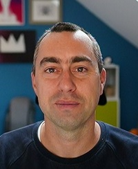
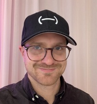

Workshop talks and speakers
The Program Committee has identified the following speakers and talks as input to the Mid-November 2021 live discussions.
Discussions emerging from the talks are welcomed in our GitHub repository issues, either by creating a new issue or commenting on an existing one.
Note:
The talks themselves will be published on 25 October 2021.
Table of Contents
Integration of media production workflows
These talks give an overview of media production workflows, the opportunity that the web platform brings to this space, and architectural and data management design considerations.
Professional Media Production on the Web
by Pierre-Anthony Lemieux (Sandflow Consulting, supported by MovieLabs)
Professional Media Production on the Web
by Pierre-Anthony Lemieux (Sandflow Consulting, supported by MovieLabs)- Abstract
Something unimaginable just 5 years ago has happened: movie and TV production assets are processed and stored in the cloud. In parallel, the web has evolved from text pages with opaque plug-ins to a rich audio-visual medium. The time feels right for professional media production and the web platform to come together.
- Speaker
-
Pierre-Anthony Lemieux
Sandflow Consulting, supported by MovieLabs
PartnerPierre has had a foot in both the web and professional media. Most recently, he led within SMPTE the development of the Interoperable Master Format (IMF) for the exchange of professional audio-visual masters, and served within W3C as editor of the IMSC recommendation for subtitles/captions. He lives in California and enjoys cycling and flying planes.
- Abstract
Modern productions are a collection of millions of files created by 100s of users around the world to create a single piece of content surrounded by an array of marketing, licensing and distribution needs. In this talk i'll focus on how information moves throughout the creator/production/studio ecosystem. The high velocity of files sizes, types, qualities all with Tier 1 security requirements and real time review expectations create an interesting mix of challenges.
- Speaker
-
Steve Cronan
5th KindSteve Cronan, Founder and CEO of 5th Kind is the creator of the CORE product solution series developed to meet the evolving workflow challenges faced by studios and enterprises in the digital space. Building on a concept sparked in 2001 while working on the Matrix sequels, Steve has pioneered the field of secure real-time studio and production workflow management.
- Abstract
There are many interoperable solutions for video and audio pipelines that start or terminate in a browser and incorporate ingest, playback, editing and other workflows. When it comes to production metadata associated with video and audio, it's much more of a mess.
Metadata might be standardised like a GPS coordinate or time of day in ISO 8601 format. It might be proprietary like a tripod's gimbal position or characteristics of on-set lighting. Metadata might be bursty, slow and not synchronised to the video like a log of who's in shot or it might be high speed, binary and related to free-running clock like lens position or zoom setting. Metadata might be generated by a device like the velocity of a car, buggy, dolly or crane. Metadata might be derived from on-set stimuli such as the LED wall virtual set velocity.
The only common factor to all of this metadata is that none of it makes it to the VFX / Editor / Mastering suite unless you do a bunch of customs stuff in your workflow. I think we can do better. What do you think?
- Speaker
-
Bruce Devlin
SMPTEBruce is the SMPTE Standards Vice President, founder of Mr MXF and has enjoyed award winning C-level positions at media companies over the years. He literally wrote the book on MXF and is a recognised world expert in media files and formats. Checkout his free Bruce's Shorts video series to improve your skills in the business of file based technology.
Accessibility in creative tools discussion
by Ed Gray (AVID)
Accessibility in creative tools discussion
by Ed Gray (AVID)- Abstract
Ed Gray talks about the business case for excellence in accessibility, development directions driving accessibility, some key lessons learnt and lastly shows how a user of native creative tools with accessibility needs can benefit from thoughtful design.
- Speaker
-
Ed Gray
AVID
Consulting developer evangelist and accessibility DirectorLeads audio third-party developer program and efforts to drive accessibility into AVID products and services.
Ontology Matching for Workflows on Media Production on the Web
by Massimiliano Dal Mas
Ontology Matching for Workflows on Media Production on the Web
by Massimiliano Dal Mas- Abstract
Consumer and professional media web applications used for creating and managing different media content require integrated collaboration applications to aggregate and generate new media content.
Due to the rapid growth of structured/unstructured data and user-generated media content the volume of data is becoming too big or it moves too fast.
For an evolving environment it is necessary to understand what knowledge is required for a task domain with an adaptive ontology matching.
- Speaker
-
Massimiliano Dal Mas
An engineer working on webservices and knowledge eng. - RDF/OWL
- Abstract
Content supply chain for media production includes nowadays several use cases, including localization, validations and in an open-collaborative environment using multiple systems: transcoder, editing tools, AutoQC and even AI tools. Using a Media Integration platform will leverage the implementation of these use cases as it will be possible to define these workflows using a LowCode/NoCode paradigm and most importantly future proof. In this talk we will present the challenges and what barriers will break focus on the need of standardization on the APIs and Datamodels.
- Speaker
-
Julian Fernandez-Campon
TedialJulian is CTO at Tedial a company with 20+ years in the market specialized in Systems Integrations and Media Asset Management Solutions for the Broadcast Industry. Julian has a deep technical background now with 25+ of experience and has been in Tedial from the origins, where his contributions have had a major impact on all aspects of the company’s solutions. He’s been key in leading the transition in recent years to meet the new challenges in the market, with the adoption of the latest technologies in Tedial’s portfolio and the company’s transformation to DevOps. He lives in Malaga (Spain) and enjoys Cycling in the mountains and running in the beach.
Web APIs for media production
These talks present some of the existing and emerging web platform technologies that can be used to build media production applications on the web, with practical suggestions for developers and open questions from browser vendors' perspectives.
- Abstract
This talk offers a real time coding demo to familiarize viewers with the core interfaces of WebCodecs. The demo will demux, decode, and render video from an mp4.
- Speaker
-
Chris Cunningham
Google
Tech Lead WebCodecsChris is a software engineer at Google, working on Chrome's videostack team. He also serves as a co-editor of the WebCodecs and MediaCapabilities web specifications. He formerly worked as a full stack engineer at an ecommerce startup and as a videostack engineer on Microsoft's Skype (then Lync team). Chris enjoys skiing with his family in mountains outside Seattle.
- Abstract
In this talk I'll present the current state of VideoEncoderConfig dictionary. The idea is to show you what we have so you can tell me what we're missing.
- Speaker
-
Chris Cunningham
Chris is a software engineer at Google, working on Chrome's videostack team. He also serves as a co-editor of the WebCodecs and MediaCapabilities web specifications. He formerly worked as a full stack engineer at an ecommerce startup and as a videostack engineer on Microsoft's Skype (then Lync team). Chris enjoys skiing with his family in mountains outside Seattle.
Google
Tech Lead WebCodecs
- Abstract
This talk discusses memory access patterns when WebCodecs is used in conjunction with other APIs, what WebCodecs does today to minimize memory access overhead, and envisioned solutions for further improvement in the near- and longer-term future so that WebCodecs' performance profile can match that in a native application.
- Speaker
-
Paul Adenot
Mozilla
Staff Software EngineerPaul Adenot is a platform engineer at Mozilla, working on the Firefox web browser, primarily on anything related to audio and video. He also co-edits the Web Audio API and Web Codecs specification at the W3C.
- Abstract
"What are the things that you need to think about if you were to build an audio app on the web today?" In this presentation, we discuss how to take advantage of Web Audio API by understanding its architecture and the performance charactereistics. Also it is followed by the introduction of a set of tools named "Web Audio perf toolkit", which allows you to debug, profile, and measure your application from several different angles. We also briefly touches critical problem areas such as privacy and input/output latency.
- Speaker
-
Hongchan Choi
Google
Tech Lead, Google Chrome W3C Audio WG Co-chairHongchan is the Technical Lead of the Chrome Web Audio team and a co-chair of W3C Audio Working Group. He codes, writes, and speaks about Web Audio. His mission at Google is making audio better on web. He also care about building a healthy ecosystem with developers and industry partners. Before Google, Hongchan studied computer music at CCRMA, Stanford University and spent years creating and teaching computer music in South Korea.
- Abstract
For many in broadcast and streaming, WebRTC is not “complete”, as it lacks a standard signaling protocol to make it work like RTMP or RTSP.
WHIP, the WebRTC HTTP Ingest Protocol, was developed to solve the biggest pain point with adopting WebRTC as a serious, professional, robust contribution protocol: Media Ingest. WHIP enables WebRTC to retain its technical advantages over older protocols like RTMP when it comes to resiliency over bad network conditions, adaptability, end-to-end encryption, and new codec support (hello AV1 SVC). It also removes the barrier WebRTC had with a lack of standard signaling protocol that has made it hard to support as a software solution, and difficult for hardware encoders to implement WebRTC.
Developers love WebRTC because it is an IETF & W3C standard that makes it easy to write client applications with native broadcast and playback support on billions of devices worldwide. And the WISH working group at the IETF is currently reviewing WHIP with a milestone to publish it as a standard by December 2021.
Implementing the open source WHIP library in your software or hardware encoder is all you need to support the entire WebRTC stack on the sender side.
It’s time to WHIP WebRTC into shape and take advantage of WebRTC end-to-end, as it was meant to be, natively on every device.
- Speaker
-
Sergio Garcia Murillo
Cosmo SoftwareSergio Garcia Murillo is a technology enthusiast, long time media server developer and WebRTC expert. He is the founder of Medooze, CoSMo Software Media Server Tech Lead, and Millicast CTO.
- Abstract
Introduce some possible ways for web developers to do video-transcoding based on WebAssembly and WebCodecs, and the chance if we could make video-transcoding easier to achieve by WebCodecs APIs.
- Speaker
-
Qiang Fu
Bilibili
Senior Front-End DeveloperQiang's work is serving for the video-creators on Bilibili, committed to providing some convenient authoring tools on browser. He has some experience in multimedia production and its workflow.

- Abstract
On the web today, creative applications can't implement tools that allows users to select colors from any pixels on their screens. Microsoft is proposing (and has implemented in Chromium) a new API that enables authors to use a browser-supplied eyedropper. This talk describes the problem that this API solves, shows a little demo of the feature in action, and describes the API.
- Speaker
-
Patrick Brosset
Microsoft
Senior PMPatrick works on DevTools, PWAs and web platform.
Developing professional media production applications
These talks cover developer perspectives and experiences of building web-based media production application, using technologies such as WebAssembly, WebCodecs, WebRTC, highlighting the capabilities already available as well as challenges and limitations that highlight requirements for future development.
- Abstract
Creative tools have long been able to push the boundaries of performance on desktop PCs by taking full advantage of hardware capabilities, often by interfacing directly with hardware. This talk describes many of the challenges that exist with building tools based on the web platform that are just as capable as existing desktop tools. We will also cover some of the current and proposed APIs that will help overcome these challenges.
- Speaker
-
Kevin Streeter
Adobe
Principal ScientistKevin is a principal scientist at Adobe, working on video, cloud, and network technologies. Kevin has been an active member of the standard community for many years, working in both MPEG and W3C on video and media standards. His current focus is developing tools and systems for creative expression and collaboration on the web and in the cloud, with a particular emphasis on video production.
- Abstract
Initially using WebAssembly to run cross compiled codecs, we have just ported to using WebCodecs instead. The talk discusses the impact of WebCodecs for Browser Hosted Video Editing and how WebCodecs interacts with the wider browser development environment.
- Speaker
-
James Pearce
Grass Valley
Principal EngineerJames's background with Grass Valley stretches back 20 years, working initially on broadcast video server products, before moving into media asset management. Lately, as part of the company’s pivot to cloud, he's been part of the team building Grass Valley’s new cloud-based media asset management system, with a responsibility for browser-based media editing, logging and play-back. His recent focus has been on the design and development of a browser-based agile player engine and then applying that to build a non-linear editor.
- Abstract
WebAssembly makes it possible for us to migrate our C++ video editing engine to the web, but the development experience is not perfect. I want to talk about some possible improvements.
- Speaker
-
Junyue Cao
ByteDance
Senior Software EngineerJunyue works for media team in Bytedance. He is currently working on a web video editor migrating from C++ engine with WebAssembly.
- Abstract
This focuses on accuracy when working with media on the web. Accuracy is crucial In professional media workflows and Web media APIs can be lacking in this area.
- Speaker
-
Sacha Guddoy
GrabyoSacha is the Lead Frontend Engineer at Grabyo, working on bringing high-end video production workflows to the cloud.
- Abstract
This talk focuses on the use of WebRTC in professional live broadcast workflows. In a live production environment, users need to rely on their tools being accurate and performant. Furthermore, greater flexibility in the WebRTC API would allow novel workflows and optimisation.
- Speaker
-
Sacha Guddoy
GrabyoSacha is the Lead Frontend Engineer at Grabyo, working on bringing high-end video production workflows to the cloud.
Improving Clipchamp's in-browser video editing pipeline with WebCodecs
by Soeren Balko (Clipchamp)
View talk

Improving Clipchamp's in-browser video editing pipeline with WebCodecs
by Soeren Balko (Clipchamp) View talk
- Abstract
Clipchamp's mission is to enable everyone to tell stories worth sharing through the power of video. To live up to that goal, we have built a video editor that runs fully in-browser. This also means running the full video processing pipeline on the client and engineering around the challenges that the browser still poses for resource-intensive workloads. Offering access to hardware-accelerated video decoding and encoding, the Clipchamp team has started integrating WebCodecs into our video processing stack early on. In the production version, we wrap the WebCodecs API into custom codec plugins. These form a part of the FFmpeg WebAssembly port that is the beating heart of Clipchamp. This talk covers some of the challenges we encountered along the way and discusses the engineering decisions that we made in response to that. We also make suggestions for some future iterations of the standard, hoping to see it further improve over time.
- Speaker
-
Soeren Balko
ClipchampSoeren was a co-founder of Clipchamp and its CTO until his company was recently acquired by Microsoft. He passionately believes in the in-browser paradigm of edge computing, which is the backbone of Clipchamp's video editor today. Before joining Clipchamp (now Microsoft), Soeren had a six year tenure at SAP, learning the ropes while working on enterprise computing middleware. Soeren holds a PhD in computer science from Magdeburg University (Germany). With his wife and son, he is living in sunny Brisbane (Australia).
- Abstract
This talk presents a wishlist of common needs when developing media editing applications, along with relevant API features that could be used if they were supported across web browsers.
- Speaker
-
Christoph Guttandin
Christoph is a freelance web developer specialized in multimedia web applications. He has recently worked on streaming solutions and interactive music applications for clients like TV stations, streaming services, synthesizer vendors, and artists.

- Abstract
WebAssembly is great for audio plugins, AudioWorklet deliver real time experience for music production. Still latency, stability and audioworklet resource priority is essential to give a usable experience. I'll demonstrate how it should work on my M1 macbook Air (in chrome) with demos from the WebAssembly music project.
- Speaker
-
Peter Salomonsen
Peter has been playing with playing with computer music since the 80s, always chasing the vision of a portable, compact, yet limitless music production environment. After decades of efforts in Assembly, C/C++, Java (the Frinika project), finally the Web emerge as a viable path. Combining WebAssembly with Web Audio, he has created a web app for live coding and synthesizing instruments in real time. This was demonstrated at the WebAssembly summit in 2020 and has caught attention in the Web Audio and WebAssembly communities. He is using the app to create music for various digital art projects.

- Abstract
Soundtrap implements a collaborative Digital Audio Workstation (DAW) in the browser and makes heavy use of WebAudio and other web APIs. We highlight two needs for audio/midi recording use case:
- Low latency for 'monitoring'. Ex, feeding the input through effects or playing a software instrument.
- Accurate latency information to perform 'latency compensation' when recording multiple 'tracks'.
- Speaker
-
Ulf Hammarqvist
Soundtrap/SpotifyUlf has a backround in audio-related software engineering for RTC, music streaming as well as music production tools. Interested in both the integration/architecture aspects and deeper ADSP subjects. Currently working with the beating audio heart of Soundtrap.
- Abstract
In the DisneyResarch|Studios (DRS) machine learning pipeline DRS frequently works with production assets in the OpenEXR format. Monitoring the training, inspecting results, and eventually judging the quality of these new approaches require tracking and comparing those assets. DRS decided for an approach where a server provides high dynamic range results as EXR files and compiled OpenEXR using emscripten to allow in-browser decoding and viewing. Using WebGL, simple adjustments and a visualization of per pixel error metrics can be performed by the client on the fly. In this talk, DRS will present the problem, the chosen solution, challenges that DRS has encountered, and demonstrate JERI.io, the web-based EXR viewer, which DRS has released as open source.
- Speaker
-
Max Grosse
Disney ResearchMax is principal software engineer at DisneyResearch|Studios. There he works in a variety of areas, ranging from developing simple prototypes to full production systems, always at the interface between research and production use. While most of his daily work involve either performance critical media applications or complex machine learning set-ups, he is also passionate about web technology and tries to combine these different worlds wherever it makes sense.
Live and post production for Tokyo Olympics 2021
by HE Zhi (China Mobile - Migu)
Live and post production for Tokyo Olympics 2021
by HE Zhi (China Mobile - Migu)- Abstract
This talk will reflect on Olympics 2021 experiences in media assets productions and distribution from China Mobile, as the solo live broadcaster for new media in China, and explore the combination of 5G-based remote production, lightweight web system as well as HDR features.
- Speaker
-
HE Zhi
China Mobile - MiguR&D, Multimedia technologies in China Mobile and Nokia, leading the web-based media production team at China Mobile - Migu
Distributed multi-party media-rich content review
by Oleg Sidorkin (Bluescape)
Distributed multi-party media-rich content review
by Oleg Sidorkin (Bluescape)- Abstract
Classic video conferencing and assets sharing tools are not adapted for group work when it comes to high fidelity content such as art, animations, video. We created a novel approach where virtually any website or web-enabled tool can gain additional functionality for live co-experience in viewing (common operating picture), commenting, and editing creative content. The desired web resource is loaded and operated in the cloud, while exact incremental changes are broadcasting to all connected clients.
- Speaker
-
Oleg Sidorkin
Bluescape
Principal Lead Software Architect
Sponsor

Interested in sponsoring the workshop?
Please check the sponsorship package.